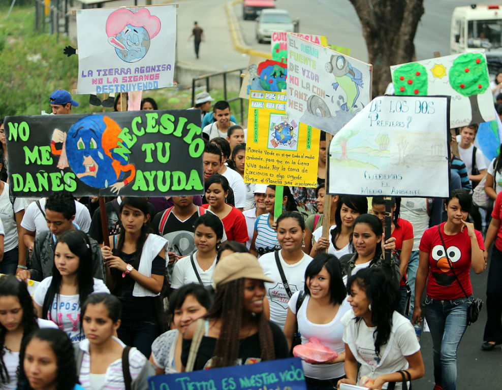
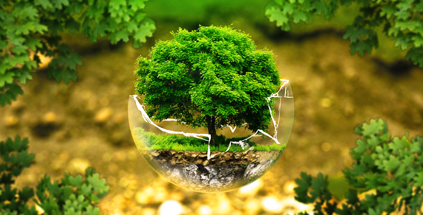
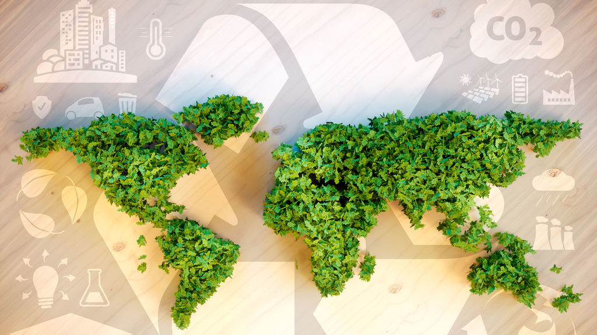

Dia internacional de la madre tierra 22 de abril
Realizado por:
Fatima Martinez Diaz
4 G
Especialidad:
Programacion
Submodulo
Desarrolla Aplicaciones Moviles
Docente:
Lic.José Antonio Gómez Hernández
4 G
Programacion
Desarrolla Aplicaciones Moviles
Lic.José Antonio Gómez Hernández
Celebramos el dia internacional de la madre Tierra para recordar que el planeta y sus ecosistemas nos dan la vida y el sustento. Con este dia, asumimos, ademas, la responsabilidad colectiva, como nos recordaba la Declaracion de Rio de 1992 de fomentar esta armonia con la naturaleza y la madre tierra. este dia nos brinda tambien la oportunidad de concienciar a todos los habitantes del planeta acerca de los problemas que afectan a la Tierra y a las diferntes formas de vida que en el se desarrollan

el primer día de la Tierra se celebró en Estados Unidos, el 22 de abril de 1970. Desde entonces, esta fecha recuerda el valor del lugar en que habitamos y por qué es importante preservarlo Esta fecha fue elegida porque el 22 de abril de 1970 una manifestación en Estados Unidos para que se creara en el Gobierno una agencia ambiental que trabaje sobre las problemáticas medioambientales.
La Tierra y sus ecosistemas son nuestro hogar. Para alcanzar un justo equilibrio entre las necesidades económicas, sociales y ambientales de las generaciones presentes y futuras, es necesario promover la armonía con la naturaleza y el planeta.
se denomina Armonía con la Madre Tierra, porque el equilibrio de los seres humanos con la naturaleza está alterándose de forma peligrosa en el último siglo. Las actividades humanas están influyendo considerablemente en el medio ambiente de la Tierra en muchos aspectos, además de las emisiones de gases de efecto invernadero y el cambio climático. La propuesta de resolución busca desarrollar una perspectiva de equilibrio entre los seres humanos y la Naturaleza. Creemos que los conceptos de supremacía humana sobre el medio ambiente son absolutamente obsoletos a estas alturas. De ahí la importancia del concepto de armonía, que busca tanto el bienestar humano presente y futuro, como el de la naturaleza. Porque no puede haber bienestar ni desarrollo humano si destruimos nuestra madre tierra.
